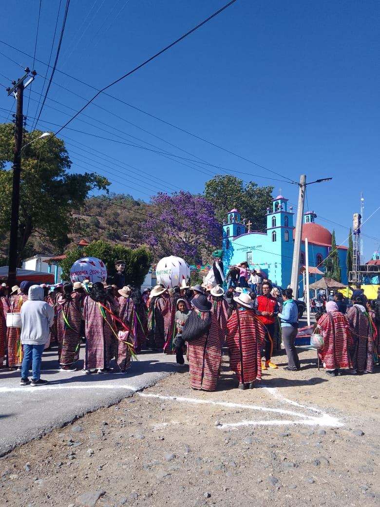
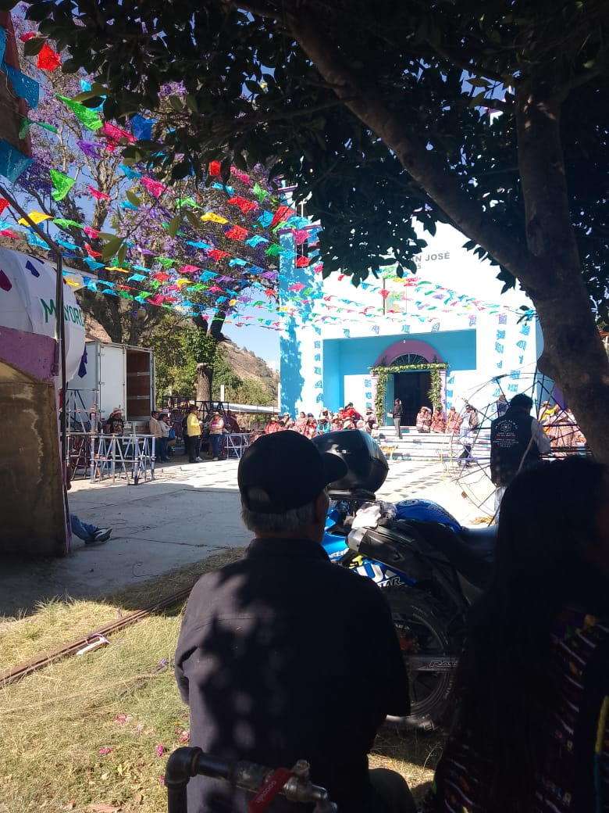
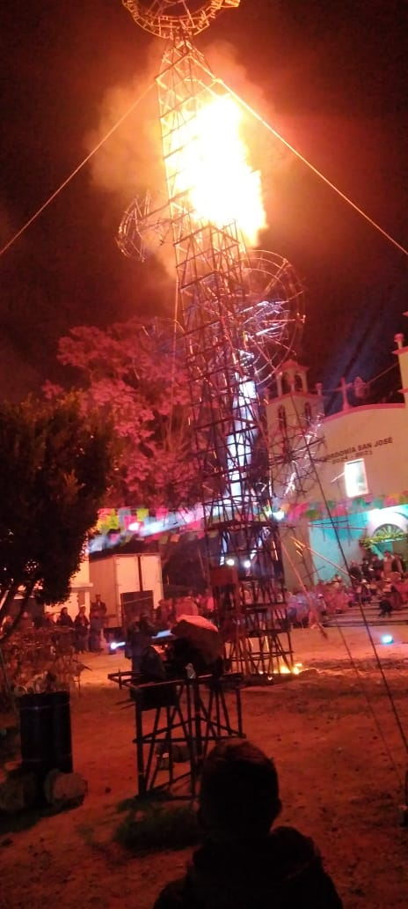
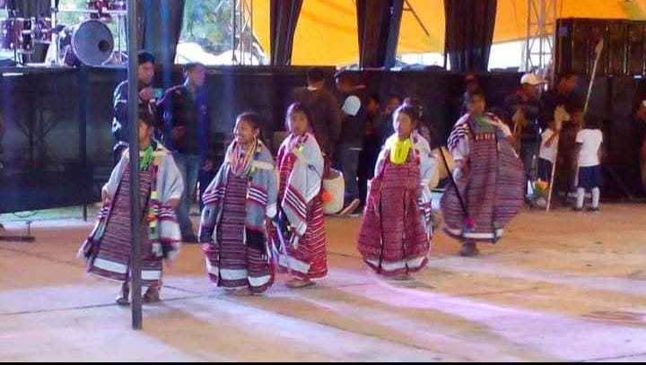

|
| |
| Historia Galeria Ubicacion Contacto Curiosidades | La localidad de San José Xochixtlán pertenece al Municipio de San Martín Itunyoso (Estado de Oaxaca).  Hay 824 habitantes y está a 2,300 metros de altura. En la lista de los pueblos más poblados de todo el municipio, es el número 2 del ránking. Los Chilolos de los pueblos triquis visten con prendas unidas por trozos de tela, sus penachos son de papel de colores que ellos mismos elaboran y sus máscaras son de plástico, algunos son de madera. Mientras, se desarrolla el baile,” musica del huipil chaàk ranúú, esquina de la servilleta que es siikuj mañuu. baile del torito chaà roo huej “corretean a los niños, en la explanada  El día transcurre entre danzantes que realizan sus mejores pasos y caminan sobre las principales calles, en donde algunas familias les ofrecen refrescos y tepache (bebida de maíz y otros ingredientes fermentados), gritos y risas de los pequeños y la danza de los Chilolos, así, como las risas y el asombro.  Anteriormente la vestimenta de los hombres consistía en un calzoncillo hecho de piel, que era sostenido por un ceñidor tejido y un sarape de la región. Con el paso del tiempo fueron sustituidos por una camisa y un pantalón de manta. En la actualidad los hombres utilizan ropa comercial que compran en la plaza o en tiendas de las ciudades cercanas, solamente el ceñidor se ha conservado.  El huipil rojo es la vestimenta que caracteriza a las mujeres triquis, es de cuerpo completo, tejido en telar de cintura y de uso diario. Debajo del huipil, las mujeres utilizan un enredo tejido que es sostenido por un ceñidor. En el cabello adornan dos trenzas hechas de estambre y peinetas de diversos colores. Y como complemento, añaden collares y aretes. |